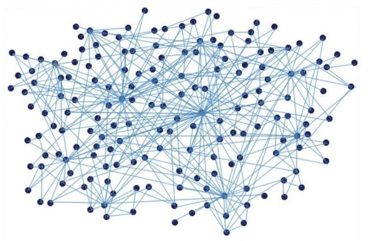

Like the social network graph presented below, the social network is like a spider web and is connect to one another. As you have experienced, It is certainly not easy to get out of the web.
Do you remember how many pages and objects have you seen in total? Not a lot of people will remember all the information you have just encountered.
It is also the same in Social Media. We cannot recap all the posts and stories and this is why we need cautious approach to Social Media.